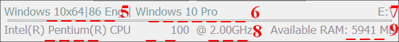
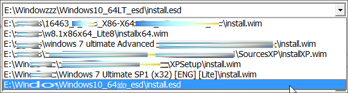
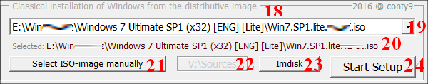
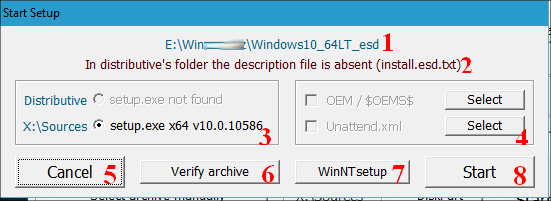

The utility allows you to keep the OS distribution sets for Windows 7/8/8.1 (and possibly 10) in 3 folders (specified in the 78setup.cfg configuration file).
It supports processing both unpacked distributions, and disk images (if necessary, ImDisk is installed to work with images).
Started tool scans folders specified in the configuration on all drives (processes all subfolders of these folders), and generates found distributions list and disc images list.
Additionally distributions unpacked to the root disk (Sources folder) are scanned. Number of distributions is not limited to (within reason), fifty of them are displayed without any problems.
Despite the buttons "abundance" software is quite simple in the normal use case. In general, you should determine what variant of the distributions
should install operating system: from decompressed one (Classical installation from distribution folder) or from disk image
(Classical installation from distribution image). We choose the necessary distribution in the corresponding panel (from found or,
if necessary, manually), and click "Install". This opens installation parameters selection window. There will be default optimal choice of
installation environment, $OEM$ folder and installation script (they can be changed too, if necessary). We will have only to click "Start"
- and classic OS installation starts ...
There is 78setup interface with numbered panels and buttons in the picture.
They are clickable, the page will scroll to the location with the bookmark.
----- 1-4 -----
1. Open Task Manager. There is hotkey to call TaskMgr (Break/Pause button) hotkey works until 78setup is running. 2. Resolution (800x600 or 1024x768) selection panel. If selected resolution is not specified, resolution setting is disabled (it is believed
that there is a full resolution mode selection for PE). 3. Panel to change operatively 78setup language (on start utility detects automatically PE/OS language, and if it is Russian, Russian interface
is shown; if not, English is shown). At operational change of the language also available HDD are refreshed and distribution are searched repeatedly on all disks (similar to the 4-th item). 4. Refresh HDD. Repeated search for the distributions will be made (actually, if you have connected new media) without program restarting. At the same time manually added distributions will be removed from the dropdown menu.
---- 5-9 ---- INFO

5. Information about the system: for WinPE boot view (BIOS/UEFI), OS/PE type (Windows/WinPE Indication), bit (x86, x64,
if supported x64 x86 subsystem, then h64|86), Russian or not ( Rus/Eng, for others - DOS-code page display, eg CP: 936 for the Chinese WinPE). 6. Name of the running OS/PE. 7. The disk where you are running the utility. 8. Name of the processor and its frequency. 9. Available RAM on the OS/PE (full amount for x64; without PAE support for x86, it is limited to 3,7Gb 3.2 ...).
10. Panel, Setup from extracted distribution Sources folder
11. Tip for hotkey ( 'Alt + Break') to interrupt the OS installation or MS DaRT operation. 12. Choosing distribution.
*.wim, install*.esd, install*.swm wilcard search is performed. All available options are added to
selection menu.

The last thing is to search in root Sources folders (regardless of the folder settings for search), the latter found
option is selected by default. 13. Distribution description from install*.wim/esd/swm.txt file (ie, the name should be the same as that of installation file,
but with the additional .txt extension). The text should be in one line, coding 1251, up to 70-80 characters. You can not use special characters, and a comma -
generally try to, if it is "uncomfortable" symbol - a description will be truncated/reduced/missed. "There is no install.wim.txt description file in distribution's folder" message is
displayed if no description file is found. 14. Manual distribution selection (opens the file browsing window, wildcard *.wim/*.Esd/*.Swm). The selected distribution
will be added into drop-down menu (p.11) and selected by default. 15. Setup environment status in the X:\Sources folder. If the environment is not available, the inscription is in gray,
if the environment is available, the inscription is in black. If environment is not available, but it has archive (sources.7z and sources64.7z
files in Utilites subdirectory), after the 78setup is launched the archive will be unpacked in the background and after this the display will
change. 16. Run DiskPart in a separate window. 17.Setup (with the possibility of installation environment, OEM and installation script) starts.
If the installation environment is missing, the setup is possible only with the help of WinNTsetup.
18th Panel, Setup from distribution disk image (ISO)

19. Choosing distribution image. The search is performed by wildcards *.iso, *.nrg, *.bin (these formats are supported
by ImDisk). All available options are added to the drop-down menu. 20. Displays the current (selected) image for use. 21. Manual image selection. After your choice the image will be added to the drop-down menu (p.19) and selected by default. 22. Mounted image V:\Sources folder display. 23. Window ImDisk control (you can mount the image with any free drive letter, or detach image). 24. Start setup. New image is mounted (if necessary) before starting. Under PE (if there is any tray bar),
message pop-ups in the system tray after mounting.
The next is the same to p.16, but distribution to setup will be selected from V:\Sources folder.
U2-5. 78setup staff utilities: notebook, file manager Just Manager /hotkey 'F11'/, Recovery Environment/DaRT running
(if on the path X:\sources\recovery\RecEnv.exe is msissing it is inactive), BootICE (hidden if there is no WinNTsetup).
U6-9. 78setup Custom utilities. you can specify in the configuration file (78setup.cfg):
а) utilities names (User X =, where X is 1 ... 4) displayed on the buttons
б) the path they run (UserX86=/UserX64= x86 or x64 environments, respectively), the path can be a relative (relative 78Setup.exe, for example,
Utilites\SnapShot.exe), and a full (X:\Windows\regedit.exe)
* If you know that WinPE x64 will be used with support for x86 subsystem, you can specify the same (path to the x86 version of the tool)
** If the path to the utility (corresponding OS/PE bit) is not specified or is incorrect, its start button will invisible.
U10. Switch to the "Reboot" window. It displays a warning, and reboot or shutdown your PC is available.
Any media (CD/DVD) are retrieved before turning off.
* Under PE installers reboot is also possible, if at Alt + F4 to close 78setup (used as the shell); in this case work session will end -
which will cause PE installer to reboot.
** After using the Recovery Environment (if you leave the program) are reloaded. If this is undesirable, remove RecEnv.exe process in
Task Manager or by hotkey 'Alt + Break' (p.18) without leaving the DaRT
Setup parameters selection

1. Distribution folder is displayed 2. Description display (if available). For the image (if the image has no description), it is displayed the full path to the image. 3. Installation environment selection panel. The maximum possible 3 options:
a) Distributive. There is environment in the distribution folder and is suitable for use;
b) X:\Sources. There is environment in X:\Sources (or has been unpacked from Utilites\sources*.7z) preform;
c) .\Utilites. Environment is already available in the X:\Sources when you start 78setup, but it can be used from Utilites\sources *.7z preform.
It is displayed Bit and the installation environment version.
* Preliminary search is made for files in the distribution folders and X:\Sources. Found files are analyzed by the bit (x86/x64) and added to this menu. Only those options will
be available to use that are compatible with the current system (ie, for WinPE x86 - only x86, and for WinPE x64 x86 without the support subsystem - only x64). Besides installation
file bit, an important role is played by installation environment bit (libraries beside setup.exe) - it must meet the setup.exe bit, installation is possible under such conditions
only. If you have installation environment in the X:\Sources, then there is 100% necessary environment. 4. Selection panel of the OEM-installation and script folders. By default, automatically they are selected from the distribution folder (the items are inactive if not available in
the distribution). It is possible to manually select also (the item is activated when is selected). 5. Cancel, exit to the main menu. 6. Verifying selected distribution archive (install*.wim/esd/swm/rwm file) integrity via WimLib (it opens the DOS-window with information about the state and result of the test). 7. Running OS installation using WinNTsetup. The program allows you to install the operating system, even without the installation environment.
In this case settings (the selected distribution, the installation script) will be automatically added to WinNTSetup, as well as the destination drive for the OS and the boot
loader will be selected C:\.
* WinNTsetup supports OEM-installation folder exclusively from the distribution folder.
That is, if the distribution has Sourses\$OEM$, the OEM-installation is made from it automatically.
If the OEM-installation folder is selected manually (from a different directory), the OEM-installation will not be made. 8. Running classic setup with the selected settings.
Notes:
* If the mouse does not work, use the Tab key to navigate through the buttons (Shift+TAB to move in the reverse order) and Enter/Space to perform.
** Unavailable operations buttons are blocked automatically.
*** It is allowed to place in the same folder different versions of distributions with different names: install.swm (only one set, since it may consist of several files,
such as install.swm, install1.swm, install2.swm etc.) unlimited installXXX.wim (install_7x86.wim, install_8x86.wim etc, on a wildcard install*.wim) and installXXX.esd
(install_8x86.esd, install_8.1x86.esd and so on wildcard install*.esd). All these distributions are added to the drop-down menu. Description of the particular distribution
should correspond to its name with the additional extension txt, for example, install_7x86.wim.txt. We take into account that the installation environment and OEM installation
script will be common.
**** Starting with version 2.3, when searching 78setup skips (ignores) files less than 256MB. That is, these files are not included in the selection list of the distributions and
their images. But, if desired, they can be selected manually.
Notes about files
Assignment of the files
78Setup.exe is utility х86 version. If there is subsystem x86 in РЕх64, it will work also (ie it is sufficient in this case).
78Setup64.exe is х64 version. Designed exclusively for x64 PE installers without subsystem x86.
78setup.cfg is configuration. You can delete it if not needed (read it in the description). If not, the utilities panel is automatically activated.
Utilites\JustManager\ is file manager. If it is not needed, you can delete (button will become inactive).
Utilites\sources*.7z is SFX-self-extracting installation environment (that is unpacked to X:\Sources), installation environment (versions for x86 and x64) is used from Win10 in
the version 2.0. If it is not necessary we remove it.
Utilites\ImDisk*.7z is SFX-self-extracting ImDisk installer. Versions for x86 and x64. If it is not necessary remove. If it is missing (no ImDisk) in the WinPE, the operation buttons with virtual disks are blocked.
Utilites\WinNTSetup*.exe is Self-extracting SFX-WinNTSetup (x86 + x64). If missing, BootICE start button disappears in the main menu, and check the archives
via WimLib and installing OS using WinNTsetup in the setup menu.
Utilites\DaRTex*.exe is Explorer DaRT 6.0. Explorer comes with DaRT. Remarkable fact that no problems working with password protected (NTFS) folder. It works only in the WinPE environment.
Utilites\SnapShot*.exe is small, but very functional Drive SnapShot backuper.
Utilites\P_Assistant*.exe is Aomei Partition Assistant, quite advanced disk manager. It allows you to convert MBR<>GPT.
Utilites\ShadowProtect*.exe is excellent backuper. It allows you to create both normal and incremental backups, it can check and mount them. There is also a function of the operating system adaptation under the new hardware (HIR, works only in the x86 versions), disk manager and many other things.
Folder Translate. There are blanks for interface translation to other languages in it, the description in the read.txt. The program does not need.
* It is not necessary to use full set of files in 78Setup . If the installation environment is in PE, then you can remove Utilites\sources*.7z.
If x64-based PE has the x86 support subsystem, utilities ofthe x64 version can be removed (you need to leave driver ImDisk64.7z - if it is not in the PE x64).
If ImDisk is installed in WinPE, then Utilite\ImDisk*.7z is not needed. If additional tools (JustManager, DaRTex, SnapShot, P_Assistant, ShadowProtect) are not needed,
they also can be removed completely or optionally (or replace with your user set).
Wildcards to find the installation files
For installation file (setup.exe in the original distribution):. Set????.exe (ie, setup.exe files, set64.exe, setup64.exe,
setup32.exe will be found)
For distributions: install.swm, install*.wim, install*.esd
For disk images: *.iso, *.nrg, *.bin
For folders OEM: *OEM?
For installation scripts: *unattend.xml
Checking x64: the presence of the folder %WinDir%\SysWOW64
Checking x86 x64 subsystem: the presence of the file %WinDir%\SysWOW64\regedit.exe
78setup.cfg configuration file sample
DistrFolder1-3 - Folder names to search for distributives OS (unpacked)
ISOfolder1-3 - Folder names to search for ISO-images distributives OS
UtilitesPanel - The utilites panel: allow (any character) or hidden (0)
1. Lines 1-4 are ignored (description).
2. If it is not necessary to look for in 3 folders, specify only the first folder DistrFolder1/IsoFolder1 (and leave blank 2/3), or 1st and 2nd.
3. If you do not specify a folder to search for 1 and 2 (not filled or variable non-existent), the default search is made in the working directory
(all subdirectories too processed) and in the _ISO root folders. The same happens if configuration 78setup.cfg file is missing.
4. Search folders extends over all disks, and all found results will be added to the selection menu.
It is made additional search in root directory Sources for unpacked distributions.
5. If it is specified only the backslash \ as the search string, the search is performed on all drives and all folders/subfolders. But this is a very lengthy process
- up to ten minutes (depending on the number of drives/folders/files). It is not recommended to use - it would seem that the utility hanged!!
6. ParameterUtilitiesPanel=1 serves to enable utilities panel. When it is set to '0' or there is no configuration file, the panel is dissabled.
7. LetterSwap=1 is used to activate the auto sort of drive letters. When set to '0' or this option is missing in the configuration file then auto sort is dissabled.
It is disabled as well, if the system disk is not X:\ or in the system catalog is present letterswap*.* file (it is considered that WinPE has its sorting method).
Auto Sort result: if there is operating system on any HDD, the letters will be sorted according to the operating system, in case of missing operating system first
it will be sorted partitions on the first HDD (active partition is the first), then the second, etc .., then CD/DVD, at last - flash drives and USB-HDD (starting with Q letter).
8. It is used Sources.7z=10.0.10240 parameter to specify the Sources*.7z blank version. The parameter is optional, in its absence the version in the
"Setup parameters selecting" is not specified in 3-c).
9. User1= (Drive SnapShot in example) is used to specify the name of the User Utility button 1, while in User1.86 we specify the path to run x86 version of the utility, and
User1.64 - x64 version (for x64 with X86 subsystem support it is permissible to use x86 version, in User1.64 we indicate the same as in User1.86 for this).
For custom utilities 2-4 it is being done analogous.
It can be indicated path:
1. For any folder on the same partition as the 78setup (use the variable% CurDrv%). For exemple, %CurDrv%\2k10\Programs-2k10\FileManager\TotalCmd\TC.exe to run ТС
from 2k10 program pack.
2. To specify the full path - ie, only for the programs on the system drive. For example, X:\Program Files\TC\TC.exe.
3. To specify relative path (relative to the folder where is 78_setup.exe). Eg ..\..\2k10\Programs-2k10\FileManager\TotalCmd\TC.exe. "..\" means to move to a higher level
than is the program, "..\..\" means two levels higher.
* Even though there is spaces or Cyrillic characters it is NOT NEEDED to take path in quotes.
** The order of variables in the configuration file is not important.
*** Encoding of this file (if Russian letters are used in the path) is 1251.
Repacking of the Sources.7z and Sources64.7z archives
The Sources and Sources64 archives are actually self-extracting SFX. The extension 7z is used only so that the curious
do not run accidentally.
How to repack them for our tasks:
1. We need 7z spliter. If you do not find it, it is in the kernels of the 2k10 assembly named z7.exe. Or you can
download it here.
2. First we change the extension of the originals to .exe, i.e. Sources.7z -> Sources.exe and Sources64.7z ->
Sources64.exe
3. We disassemble the originals into three components: the SFX module, the script and the actual 7z-archive. We start the
7z spliter, select the experimental one, note the extraction of all 3 parts.
4. Modify the 7z-archive with 7-Zip, or create a new one. To reduce the size, you can play with different packaging
parameters.
If there is no such desire, we choose the compression level "Ultra", the LZMA compression method (you can try LZMA2,
but this method is supported by not all SFX modules), the maximum word size and the "Continuous" block size. With these
settings, for large files, the maximum compression is usually provided.
5. We collect the SFX archive with the command
6. It is desirable to test the performance of self-extracting. If the system has an X:\ drive available for writing, just
run the created file. If this is not - you can simply mount any folder as an X:\ drive
SUBST X: C:\Test
This command mounts the C:\Test folder as an X:\ drive. After mounting, we test the work of self-unpacking - on the
disk X:\ should appear Sources folder.
It is not difficult to unmount later:
SUBST X: /d
However, it is not necessary to do this, after the reboot the mounted disk will be lost.
7. If everything works, we rename our file to sources.7z and return it to the 78setup set.
Utility can be distributed without restrictions. It is desirable to specify a link to this page usbtor.ru 78Setup
(you never know - suddenly utility is updated or there will be glitches).
 Resolution (800x600 or 1024x768) selection panel. If selected resolution is not specified, resolution setting is disabled (it is believed
that there is a full resolution mode selection for PE).
Resolution (800x600 or 1024x768) selection panel. If selected resolution is not specified, resolution setting is disabled (it is believed
that there is a full resolution mode selection for PE). Panel to change operatively 78setup language (on start utility detects automatically PE/OS language, and if it is Russian, Russian interface
is shown; if not, English is shown). At operational change of the language also available HDD are refreshed and distribution are searched repeatedly on all disks (similar to the 4-th item).
Panel to change operatively 78setup language (on start utility detects automatically PE/OS language, and if it is Russian, Russian interface
is shown; if not, English is shown). At operational change of the language also available HDD are refreshed and distribution are searched repeatedly on all disks (similar to the 4-th item). Refresh HDD. Repeated search for the distributions will be made (actually, if you have connected new media) without program restarting. At the same time manually added distributions will be removed from the dropdown menu.
Refresh HDD. Repeated search for the distributions will be made (actually, if you have connected new media) without program restarting. At the same time manually added distributions will be removed from the dropdown menu.